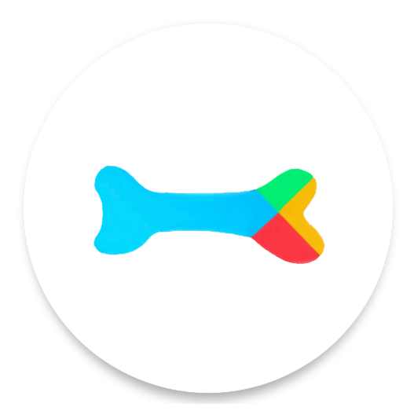

Search
智慧搜索
谷歌
百度
必应
自定义
默认
访问
Baidu
Google
Bing
bilibili
知乎
GitHub
翻译
收起
🥳 AideaTabes 中的新变化
这是 AideaTabs 的新篇章，也是我的新起点。 在 2019 年的夏天，出于对计算机软件的好奇，对写代码一窍不通的我开启了我的第一款软件 Aidea 的制作，它的诞生没有明确的目的，只是我一时的想法，正如它的名字
A idea
一样。 也正是因为它，我误打误撞的踏上了我的计算机学习生涯。随着时间的推移，Aidea 经历了一代又一代变化。直到 2022 年，在一些机缘巧合下我萌生了制作网站的想法。 最初，我只是为了制作一个整蛊同学的网站，但随着我对 web 技术不断的了解，我为 Aidea 找到了新的方向。于是我开始一边学习 web 前端；一边用 JavaScript 重新编写 Aidea。 经过一个月的编写， AideaTabs 诞生了！随着GPT等相关技术的兴起，人类社会正快速步入智能时代，Aidea也是。今天，它以全新的面貌继续着它的进化之旅——
Aidea Intelligence
使用 AideaTabs 进行智慧搜索
有什么问题尽管问我！
除了 Aidea Intelligence，AideaTabs 还支持了其他的第三方语言模型，例如 GPT，Qwen，Moonshot等
AideaTabs 将搜索框与大语言模型结合，使用方式与平时切换搜索引擎一样
与 Aidea 对话时，它可以模仿人类说话的语气，在需要换气的时候停顿。
在控制台中对 AideaTabs 进行设置
这个下拉弹窗就是 AideaTabs 的控制中心，用于管理所有的设置选项。
在控制台中可以设置记忆模式，默认关闭记忆。关闭记忆时 Aidea 只会记住你说的，不会记住自己说的，这样可以确保在理解上下文的情况下节省更多 Token
AideaTabs 支持联网搜索，这使它的认知不仅仅局限于固定的数据库，还可以从网络上进行实时的搜索
在控制台中可以调整模型参数，例如 Temperature 参数越高回答越多样，越低回答越确定
## 使用说明 新版本对软件整体进行优化，之前的功能也随之进行了变动 1. 从 0.1.6 版本开始，取消所有默认的快捷键搜索引擎，全部更改为自定义。 2. 根据用户反馈，增加了关闭快捷键的按钮，让不需要快捷键成为一种选择，默认开启快捷键，需要手动关闭。 3. 修改了自定义搜索的 URL 格式，将原来的 *word=* 更改为了 *word=%s*，用 *%s* 作为占位符来表示搜索内容，这样就可以适应各种情况复杂的URL。 4. 优化外观细节，修改配色，提升视觉效果 ### 地址栏搜索 在地址栏中输入 *a* 再按 <kbd>tab</kbd> 键即可在一些常用平台进行搜索 ### 划词搜索 在网页中选中内容，右键打开菜单，点击菜单中的 *搜索：xxx* 内容，可以使用不同搜索引擎对选中的内容进行搜索 ### 鼠标键操作 - **左键选择**：左键用于点击和选择，与大家平时的使用习惯并无差异 - **右键更改**：右键用于更改，右键点击标签页图标可以将图标进行自定义，右键点击默认搜索中的选项按钮可以更改按钮的URL，常用于自定义按钮的搜索引擎 - **中键重置**：中键用于重置，中键点击标签页图标可以将图标恢复为默认图标，中键点击默认搜索选项按钮可以将按钮恢复为默认状态 > 普通搜索模式下，右键点击搜索框或将图片或其他文件拖拽到搜索框中，文件将转换为base64；文本和链接也可以通过拖拽的方式输入搜索框 > > 智慧搜索模式下，右键点击搜索框或将图片或其他文件拖拽到搜索框中，文本暂不进行处理 ### 键盘快捷键 - <kbd>Alt</kbd> + <kbd> 0 </kbd> ~ <kbd>9</kbd> 快捷键搜索（若搜索框无内容时默认访问对应搜索引擎的一级域名） - <kbd>Del</kbd> 清空搜索框内容 - <kbd>Alt</kbd> + <kbd>H</kbd> 在搜索框输入上次搜索的内容 - <kbd>Ctrl</kbd> + <kbd>1</kbd> ~ <kbd>6</kbd> 重置快捷键搜索 - <kbd>Alt</kbd> + <kbd>G</kbd> 开启编辑模式，可以自由编辑网页内容。再次按下快捷键 <kbd>Alt</kbd> + <kbd>G</kbd> 即可关闭编辑模式